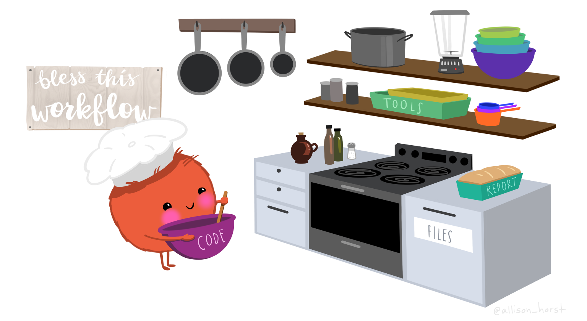

Today: Pseudocode
Pseudocode = Writing down what you plan to do before you do it
Not intimidating! Just planning.
Pseudocode as Scientific Planning
Week 2, Day 2
BIO/CHEM 806
Welcome!
Today: Pseudocode
Pseudocode = Writing down what you plan to do before you do it
Not intimidating! Just planning.
Last Class Recap
Monday: Organizing projects
Folders, file structures, relative paths, READMEs
Today: How do you plan what goes inside those scripts?
Pseudocode bridges scientific thinking and code
Pseudocode: Your Recipe

Artwork by Allison Horst
Planning Before Cooking
Artwork by Allison Horst
Just like a chef plans their recipe before cooking:
Pseudocode = Your recipe (the plan)
Code = Cooking the meal (execution)
R/RStudio = Your kitchen and tools
Data = Your ingredients
You wouldn’t start cooking without a recipe!
What Is Pseudocode?
Step-by-step description of what you want your code to do, written in plain language
Think: Recipe for analysis
Clear enough someone could follow it
Specific enough = no ambiguity
General enough = not worrying about syntax
Pseudocode Example
Bad (too vague): - “Clean the data”
Better (pseudocode):
- “Load temperature data from CSV file”
- “Remove rows where temperature is missing”
- “Remove rows where temperature < -50 or > 60”
- “Calculate mean temperature for each site”
- “Save cleaned data to data/processed/temp_clean.csv”
See the difference?
Why Pseudocode Matters
1. Forces you to think before you code
Most mistakes = typing before knowing what you’re doing
2. Reveals ambiguity
“Clean the data” seems clear… until you try to write pseudocode
3. Makes collaboration easier
Review logic before spending hours coding
Key insight: Good pseudocode translates to any programming language
Pseudocode vs. Code vs. Prose
Prose (too informal): > “Remove bad data and make a graph”
Pseudocode (just right):
- Load temperature data
- Remove rows where temperature < -50 or > 60
- Create scatterplot of temperature vs. elevation
- Save plot to figures/temp_elevation.png
Code (too specific):
What Makes Good Pseudocode
Good pseudocode has:
✅ Verbs — Load, Remove, Calculate, Create, Save
✅ Specific conditions — “temperature < -50”, “absorbance > 3”
✅ Clear outputs — “scatterplot”, “save to figures/”
✅ Domain knowledge — “out of linear range”, “GPS error”
Detailed enough = unambiguous
General enough = not worrying about syntax
Common Pseudocode Mistakes
Mistake 1: Too vague
❌ “Standardize the measurements”
✅ “Divide each mass by wing length to get body condition index”
Mistake 2: Too detailed (writing code)
❌ “Use filter() where count >= 5”
✅ “Remove sites with fewer than 5 observations”
Mistake 3: Skipping steps
❌ “Load data, make plot”
✅ “Load → Remove invalid → Calculate mean → Make bar plot”
Mistake 4: No decision points
❌ “Remove outliers”
✅ “Remove values more than 3 SD from mean”
Let’s Practice Together
Scenario: Dataset of bird observations
Each row has:
- Species name
- Date
- Location (lat/long)
- Observer name
Goal:
1. Count observations per species
2. Bar chart of top 10 species
3. Save the chart
Let’s build pseudocode step by step!
Building Pseudocode Together
Type in chat: What’s the first step?
[Wait for responses]
STEP 1: Load the bird observation dataNext?
STEP 2: Count the number of observations for each speciesOur Complete Pseudocode
STEP 1: Load the bird observation data
STEP 2: Count the number of observations for each species
STEP 3: Sort species by count (highest to lowest)
STEP 4: Keep only the top 10 species
STEP 5: Create bar chart (species on x-axis, count on y-axis)
STEP 6: Save chart to figures/top_species.png✅ Clear verbs
✅ Specific steps
✅ Logical order
✅ Not code
✅ Explicit output
Spotting Ambiguity: Example 1
What’s wrong with this?
Load the dataset
Clean the data
Analyze it
Save the resultsType in chat: What’s ambiguous?
[Wait for responses]
Problem: Too vague! What does “clean” mean? What analysis? What results?
Spotting Ambiguity: Example 2
What’s wrong?
Load temperature data
Remove outliers
Calculate average temperature
Make a plotType in chat: What’s missing?
[Wait for responses]
Problem: How do we define outliers? Average by what? What kind of plot?
Better Version
Load temperature data from field sensors
Remove temperatures < -50°C or > 60°C (sensor errors)
Remove temperatures > 3 SD from site mean (outliers)
Calculate mean temperature for each site
Create bar plot of mean temperature by site
(ordered north to south)
Save plot to figures/temp_by_site.pngMuch clearer! Every decision is explicit.
Breakout Activity - 15 minutes
Task: Rewrite your Week 1 analysis as formal pseudocode
In Week 1, you described cleaning a dataset with missing/invalid values
Now:
1. Rewrite as numbered pseudocode steps
2. Be specific — no vague verbs
3. Make decisions explicit
4. Write in Google Doc (link in chat)
When done: Pseudocode someone else could follow exactly
The Scenario
You’re analyzing bee diversity data from urban gardens. Your dataset has a “Garden Type” column with:
Task: Write a decision log entry explaining how you would standardize these categories — and why.
Model Decision Log Entry
Decision log: Standardize Garden Type categories
Problem: Same garden type appears with different capitalization, abbreviations, and parenthetical notes → creates fake extra categories.
Decision: Create a new column garden_type_std with canonical values: - community_garden - school_garden - private_yard
Rules: 1. Trim whitespace + convert to lowercase
2. Remove parenthetical notes (e.g., “(community-maintained)”)
3. Treat “comm.” as “community”
4. Map by keywords: - contains “community” → community_garden - contains “school” → school_garden - contains “private” or “yard” → private_yard 5. Otherwise → unknown + flag for review
Why: Keeps the scientific comparison (type of garden) consistent and reproducible; extra notes can become a separate variable later.
Pseudocode: Normalize Garden Type
FOR each row in dataset:
Garden Type (working copy)
→ trim whitespace
→ convert to lowercase
→ remove text in parentheses
→ replace “comm.” with “community”
END
Pseudocode: Classify Garden Type
FOR each row in dataset:
IF Garden Type contains “community”:
garden_type_std = “community_garden”
ELSE IF Garden Type contains “school”:
garden_type_std = “school_garden”
ELSE IF Garden Type contains “private” OR “yard”:
garden_type_std = “private_yard”
ELSE:
garden_type_std = “unknown”
flag row for review
END
QA Check: Did We Do It Right?
Never standardize silently. Always check your work.
Garden Type. |new garden_type_stdunknown values are rare and explainablePseudocode as Debugging Tool
Pseudocode isn’t just for planning—it’s for debugging!
When code fails, two possibilities:
With pseudocode: - Check: “Is this what I actually want to do?” - If pseudocode is right → syntax problem (easier!) - If pseudocode is wrong → fix logic first, then code
Saves hours of frustration
Before Monday
Exit Ticket: Write pseudocode (5-8 steps) for ONE of these:
Option A: Plant heights at different light levels - Remove negative heights (errors) - Remove heights > 300 cm (errors) - Calculate mean height per light level - Save summary to file
Option B: UV-Vis kinetics data - Subtract baseline (first 5 timepoints) - Remove absorbance < 0 or > 3 (out of range) - Calculate slope (reaction rate) - Save rate constant
Post in discussion board by Monday!
Exit Ticket (Canvas) - 2-3 minutes
Complete before leaving:
Define: What is pseudocode? How is it different from code? (2-3 sentences)
Critique: What’s wrong with this pseudocode?
Process the samples
Do statistics
Make graphWrite: Pseudocode for calculating BMI from height and weight data (4-5 steps, be specific about units and formulas)
Submit in Canvas →
Key Takeaways
Pseudocode = planning tool bridging thinking and code
Good pseudocode = specific, ordered, explicit
Pseudocode reveals flawed logic before coding
Language-agnostic — translates to any programming language
Use domain knowledge — measurement ranges, constraints
Next week: Start writing actual code in Quarto!
Your pseudocode this week makes that easier.
See you Monday!